Research · Vehicle Perception Availability
AUMOVIO 센서 세정 시스템
라이다·카메라를 닦는 기술의 해부, 그리고 그 사업이 회사 밖으로 나가는 순간
00Summary
세 줄 요약
왜 지금인가. 자율주행 리서치는 대개 인지·추론 모델에 집중한다. 그러나 아무리 좋은 VLA도 렌즈에 진흙이 묻으면 입력 자체가 사라진다. 세정은 인지 스택의 최하단 가용성 레이어이고, 그 레이어가 산업 구조적으로 재편되는 시점이 지금이다.
01Why it matters
왜 센서 세정이 안전 문제인가
오염은 “고장”이 아니라 “성능 한계”다
카메라가 정상 동작하는데 렌즈가 더러워 물체를 놓치는 상황은 부품 고장이 아니다. 이런 위험은 기능안전(ISO 26262)이 아니라 SOTIF(ISO 21448)의 영역이다. ISO 21448은 고장이 아닌 기능적 불충분(functional insufficiencies)에서 비롯되는 위험을 다루며, 그것을 유발하는 환경 조건을 트리거링 컨디션으로 식별하도록 요구한다. (ISO 21448 · 해설 ASAM)
즉 진흙·서리·물방울은 SOTIF의 트리거링 컨디션이고, 세정 시스템은 그것을 물리적으로 제거하는 대응책이다. 이 관점에서 세정의 요구사양은 “깨끗해 보이면 됨”이 아니라 ODD 내 인지 성능 유지라는 정량 목표가 된다.
카메라는 특히 취약하다
“Cameras have a much higher degradation in performance due to soiling compared to other sensors. Thus it is critical to accurately detect soiling on the cameras, particularly for higher levels of autonomous driving.” — SoilingNet (arXiv:1905.01492)
SoilingNet은 오염을 불투명(opaque)과 투명(transparent)으로 나눈다. 이 구분은 세정 설계에 직결된다 — 불투명 오염(진흙·새똥)은 액체로 밀어내야 하지만, 투명 오염(물방울·유막)은 공기만으로도 제거 가능하다. AUMOVIO가 “공기로 물방울 제거”, “공기만으로 먼지 제거 — 액체 절약”을 별도 항목으로 강조하는 배경이다. (대응 관계 정리는 본 보고서 해석)
후속 연구 “Let’s Get Dirty”(arXiv:1912.02249)는 GAN으로 오염 패턴을 합성해 학습에 추가하면 검출 정확도가 18% 향상된다고 보고했다. 세정 하드웨어만큼이나 “언제 닦을지” 판단하는 소프트웨어가 별도의 학습 문제임을 보여준다.
열화 전파 경로
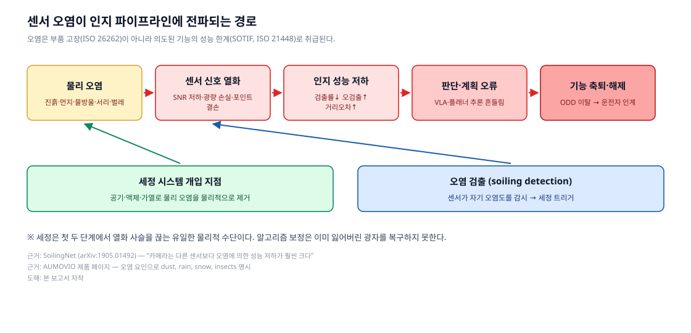
핵심은 비가역성이다. 렌즈가 가린 광자는 알고리즘으로 복원되지 않는다. 오염 보정 네트워크는 “가려졌다”는 사실을 알려줄 수는 있어도 잃어버린 정보를 만들어내지 못한다. 세정은 사슬을 끊는 유일한 물리적 수단이다. (본 보고서 해석)
02Company
AUMOVIO는 어떤 회사인가
| 항목 | 내용 | 출처 |
|---|---|---|
| 출범 | 2025년 9월 18일 프랑크푸르트 상장 (Continental 스핀오프) | Continental IR |
| 상장 첫날 | 주가 €36.60, 시가총액 약 €37억 | Bloomberg |
| 2025년 실적 | 조정 매출 약 €18.5십억, 임직원 약 82,000명, 80개 이상 거점 | Facts & Figures |
| 사업부 | ACM(자율·상용 모빌리티) · ANS(아키텍처·네트워크) · SAM(세이프티·모션) · UX | 동일 |
| 파트너십 | Aurora(자율주행 트럭), Ambarella, Horizon Robotics | 동일 |
세정 사업은 ACM 산하 “Optical Sensors & Windshield Cleaning Systems” 제품군에 속하며, 조직상 Head of Washer Systems(Petr Vanicky)가 이끄는 단위였다.
뿌리는 Continental 시절이다. Continental Automotive Systems는 이미 2012년 12월 6일 “Vehicle mounted optical and sensor cleaning system”(US20130146577A1)을 출원했고, 거기에는 세정 노즐 + 열선 코일 또는 PTC 칩 제상 소자라는, 오늘날 제품에도 그대로 남아 있는 조합이 청구되어 있다.
03Technology
기술 해부
3.1 세정의 4대 수단
| 수단 | 원문 근거 (AUMOVIO 공식) | 역할 |
|---|---|---|
| 공기 (air) | “Removing of water droplets with pressurized air to ensure the lidar availability and sensitivity…” / “Using air only to remove dust – saves liquid” | 물방울·먼지 제거, 액체 절약 |
| 액체 (fluid) | “Cleaning of lidome with pressurized liquid using Coanda effect” | 진흙·유막 등 부착성 오염 제거 |
| 가열 (heating) | “Self-regulating heater with Positive Temperature Coefficient (PTC)” / “Nozzle with heating harmonized with camera” | 결빙 방지, 노즐 동결 방지 |
| 검출 (detection) | “intelligent applications” — 알고리즘 상세는 미공개 | 세정 트리거 판단 |
인용 전부 AUMOVIO 제품 페이지 2026-09-07 수집분. 전문은 reference/aumovio-product-page-extract.txt에 보관.
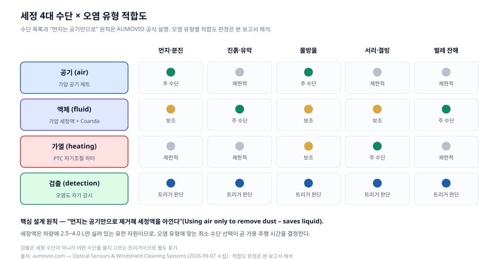
3.2 라이다 lidome / 카메라 렌즈 — Coanda 효과
AUMOVIO의 라이다 노즐과 카메라 노즐은 기술 설명이 거의 동일하다. 둘 다 다음을 명시한다.
- 가압 액체 + Coanda 효과로 lidome / 렌즈 세정
- 가압 공기로 물방울 제거 → 악조건에서도 가용성(availability)·감도(sensitivity) 유지
- 먼지는 공기만 사용 — 액체 절약
- 배수(draining) 기능
- 카메라와 조화된(harmonized) 가열 사양
- 평면·원형 라이다 모두 대응, 최소 설치 공간
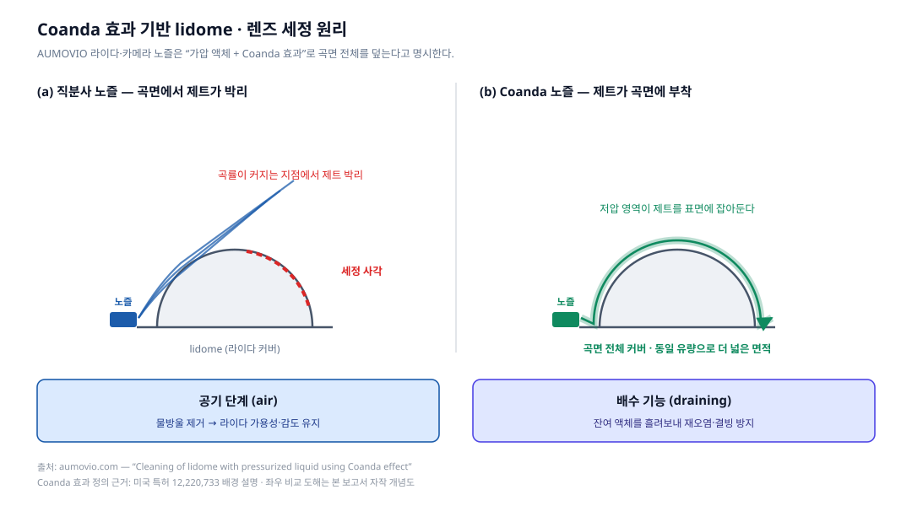
Coanda 효과란 오리피스에서 분출된 제트가 인접 표면을 따라 흐르려는 경향으로, 제트가 주변 유체를 끌어들이며 제트를 따라 저압 영역이 형성되기 때문에 생긴다. (정의 근거 — 미국 특허 12,220,733 배경 설명)
라이다 커버는 반구 또는 원통 곡면이다. 직분사 제트는 곡률이 커지는 지점에서 표면에서 박리되어 세정 사각을 남긴다. Coanda 노즐은 제트를 곡면에 붙여서 활주시키므로 같은 유량으로 훨씬 넓은 면적을 덮는다. 세정액이 유한 자원임을 고려하면 이는 성능 개선이 아니라 운행 가능 시간을 늘리는 설계 선택이다. (효과 해석은 본 보고서)
배수 기능도 짚어둘 만하다. 세정 후 남은 액체는 그 자체로 광학 왜곡을 만들고, 영하에서는 얼어붙어 더 나쁜 오염이 된다. 배수는 “세정 후 상태”를 관리하는 기능이다. (본 보고서 해석)
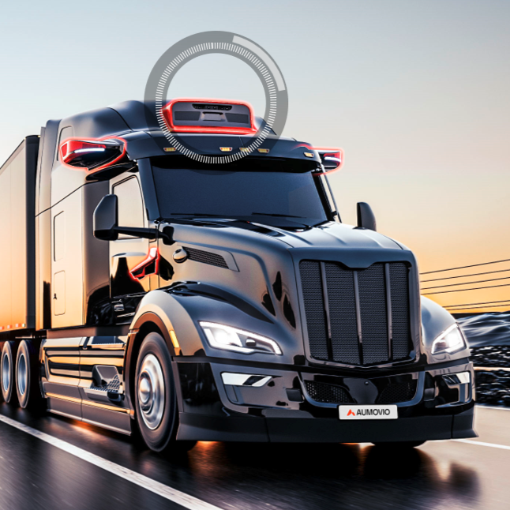
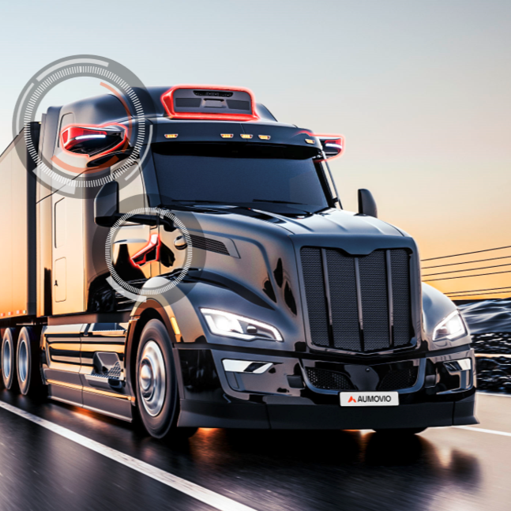
3.3 윈드실드 노즐 4종과 wet-arm
윈드실드 세정은 자율주행과 무관해 보이지만, 전방 카메라 대부분이 윈드실드 뒤에 있다. 윈드실드가 더러우면 카메라도 더럽다. 이 사업이 카메라 세정과 같은 조직에 있는 이유다. (본 보고서 해석)
| 노즐 기술 | 특징 (모두 AUMOVIO 공식) |
|---|---|
| ball | 볼 조인트 — 분사각 조정 가능 |
| fluidic | 유체 진동으로 부채꼴 스윕. 볼 노즐 대비 물 소비 최대 40% 절감. 유체 인서트 형상 변경으로 분사 패턴 조절 |
| multi-spray | 다공 분사 |
| laser-drilled | 레이저 미세 가공 노즐 |
공통 설계 요소로 동일 하우징 설계(히터·체크밸브 유무와 무관하게 공용), 짧은 응답시간을 위한 통합 체크밸브, PTC 자기조절 히터가 명시되어 있다.
wet-arm(와이퍼 암 일체형)은 세정액을 블레이드 바로 앞에 공급한다. 공식 설명이 드는 효과:
- 기존 노즐 대비 물 소비 최대 50% 절감, 더 나은 세정 결과
- 분사 중 운전자 시야를 방해하지 않음
- 노즐이 블레이드 뒤 슬립스트림 → 제트가 주행풍·차속과 무관
- 굽힘 사이클을 견디는 고유연 저항선(히터), 통합 체크밸브, 전기·유압 결합 커넥터
- 보닛 힌지를 넘는 호스 배선 불필요 → OEM 조립 시간 단축, 윈드실드 상단 오버스프레이 감소
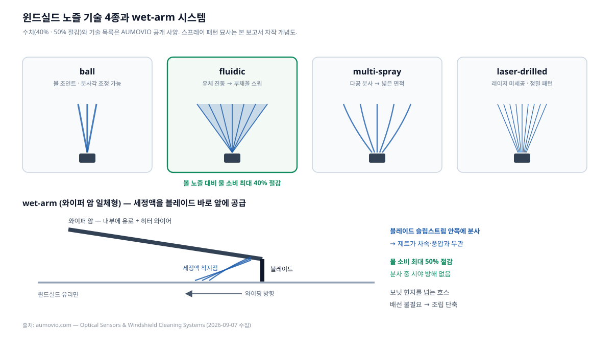
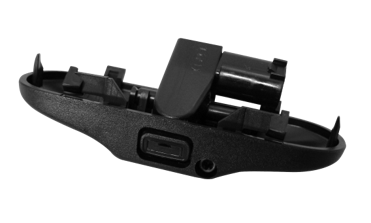
3.4 유체 공급 체인 — 리저버에서 노즐까지
노즐만으로는 시스템이 되지 않는다. AUMOVIO는 분배 컴포넌트 전체를 함께 공급한다.
| 구성 요소 | 공개 사양 (AUMOVIO 공식) |
|---|---|
| 리저버 | 블로우 성형 = PE HD / 사출 성형 = PP. 윈드실드용 용량 2.5 ~ 4.0 L. 레벨 센서는 리드 스위치 또는 2-pin. 필러넥은 블로우·사출·코러게이트 선택. 펌프 통합으로 부품 수 감소, 박육 설계로 경량화 |
| 펌프 | 단일 또는 이중 토출구. 압력 2.0 ~ 4.0 bar. 하부·측면 흡입구. 고객 요구에 따른 EMC 보호. AMP, K-jetronic 등 고객별 전기 인터페이스. 자사 표현으로 “유럽 최대 펌프 유통사” |
| 호스 | 코러게이트: PA·PP·PA/PP. 고무: EPDM·TPV. 압력 손실 저감용 대구경 옵션. 공기·액체 분리 배관 |
| 커넥터 | 전/후방 구분 색상 클립. 2세대(고온 내성, 청각적 클릭 체결) / 3세대(코러게이트 직결). 세대 혼용으로 비용 절감. 레이저 용접 — 탄소발자국 감소 |
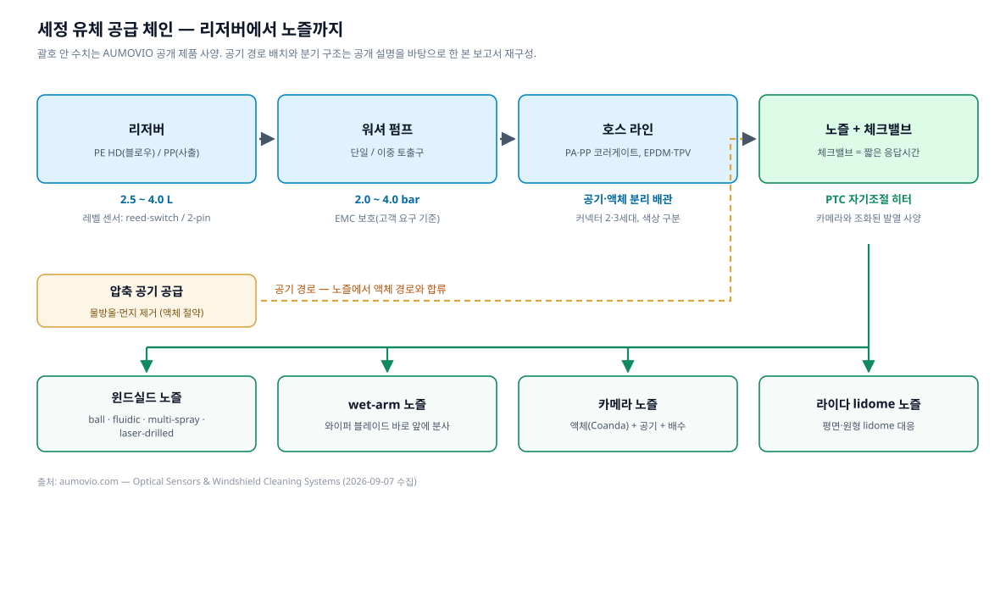
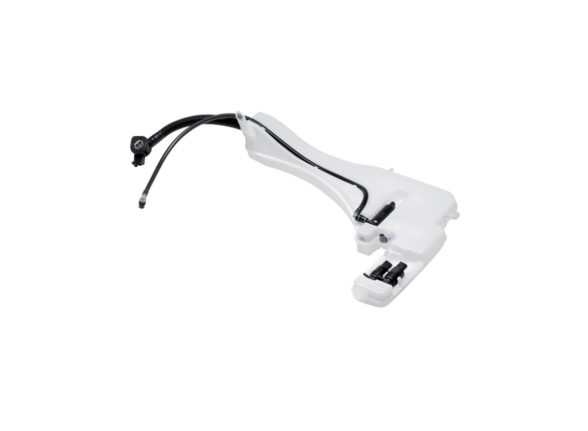
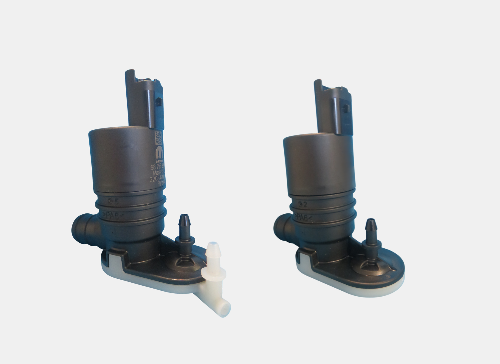
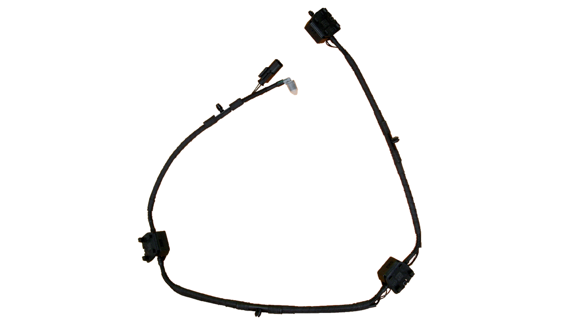
엔지니어링 관점의 관전 포인트 (이하 본 보고서 해석)
- 체크밸브 = 응답 시간. 세정 지령 후 액체가 노즐까지 가는 시간은 호스 길이와 잔압에 좌우된다. 체크밸브로 라인을 채워두면 지연이 줄어든다. 자율주행에서 “세정 지령 → 시야 회복” 지연은 곧 기능 축퇴 시간이다.
- 공기·액체 분리 배관. 노즐 하나에 유체 경로가 두 개 들어가므로 라우팅·커넥터·패키징 복잡도가 배로 는다. “최소 설치 공간”이 반복 강조되는 배경.
- PTC 자기조절 히터. 온도가 오르면 저항이 늘어 스스로 전력을 줄인다. 별도 온도 제어 회로 없이 과열을 막는 방식으로, 2012년 Continental 특허에도 같은 개념이 등장한다.
- “카메라와 조화된 히터”. 노즐 히터 발열 사양을 카메라 모듈 열 사양에 맞춘다는 뜻이다. 세정 부품과 센서 부품이 함께 설계될 때만 가능한 최적화이며, 뒤의 매각 이슈와 직결된다.
3.5 오염 검출과 세정 트리거
AUMOVIO는 검출 알고리즘을 “intelligent applications”라고만 하고 공개하지 않는다. 다만 스핀오프 이전 Continental이 발표한 Sensor Array에서 동작 방식의 윤곽이 확인된다. IAA TRANSPORTATION 2022(하노버, 2022-09-20~25)에서 공개된 상용차용 모듈로, 윈드실드 위에 장착되는 레이더 + 라이다 + 카메라 사전 캘리브레이션 통합체이며 “Camera and Sensor Cleaning, Cooling and Heating”이 통합되어 있고, 각 센서가 스스로 오염 정도를 감시해 필요할 때 자동으로 세정을 트리거한다. (Continental 보도자료 2022-09-15)
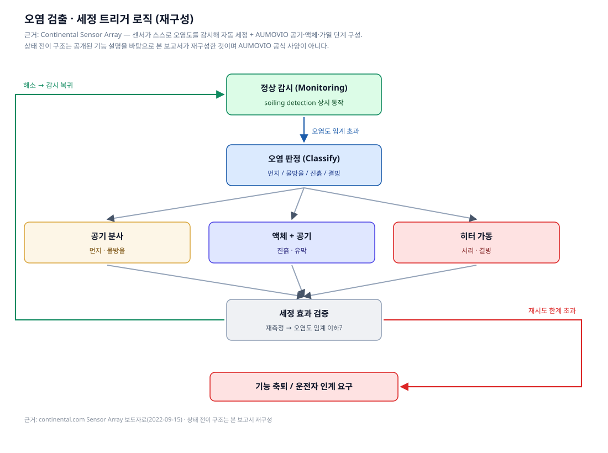
이 루프에서 실무적으로 어려운 지점은 셋이다. (본 보고서 해석)
- 오염 유형 분류. 먼지/물방울/진흙에 따라 최적 수단이 다르다. 잘못 고르면 액체를 낭비하거나(먼지에 액체) 세정에 실패한다(진흙에 공기만).
- 효과 검증. 세정 후에도 오염이 남으면 재시도하고, 한계를 넘으면 해당 센서를 신뢰 불가로 보고 기능을 축퇴시켜야 한다. 이 판단은 SOTIF 논증의 일부가 된다.
- 자원 예산. 남은 세정액으로 목적지까지 갈 수 있는가. 세정 제어기가 아니라 차량 수준 자원 관리자가 다뤄야 할 문제로 올라간다.
04Integration
시스템 통합 관점
센서 수가 늘면 세정은 비선형으로 는다
L2+ 차량의 카메라 세정점은 몇 개면 충분하지만, L4 로보택시는 라이다 여러 대 + 서라운드 카메라와 그 각각의 세정점을 갖는다. 세정점마다 노즐 + 액체 라인 + 공기 라인 + 히터 배선 + 밸브가 필요하다. AUMOVIO가 “모듈형”과 “최소 설치 공간”을 반복하는 것은 이 조합 폭발에 대한 대응이다. (본 보고서 해석)
경쟁사 Kautex도 같은 문제를 명시한다 — Allegro는 “카메라 세정점 하나부터, 카메라·라이다 조합, 고도 자동화 차량의 다중 센서 시스템까지” L1~L5를 커버하도록 스케일링된다. (Kautex Insights)
EV·전력 제약
가열은 세정 수단 중 전력을 가장 많이 쓴다. PTC 자기조절 방식이 선택되는 이유 중 하나는 제어 회로 없이 소비 전력에 자연스러운 상한이 걸리기 때문이다. 겨울철 EV에서 세정 히터·공기 압축·펌프가 동시에 도는 것은 주행거리에 직접 영향을 준다. Continental Sensor Array가 세정과 냉각·가열을 한 묶음으로 제공하는 것도 같은 맥락이다 — 라이다·카메라는 발열체이면서 동시에 결빙 대상이므로 열 관리와 세정은 분리해 설계할 수 없다. (해석은 본 보고서)
세정액 예산
리저버 2.5~4.0 L, 펌프 2.0~4.0 bar. 세정 1회당 소모량은 공개되어 있지 않다(출처 미확인). 다만 AUMOVIO가 fluidic 40%, wet-arm 50% 절감을 전면에 내세우는 것 자체가, 이 사업에서 액체 소비량이 곧 경쟁력 지표임을 보여준다.
05Competition
경쟁 구도
| 기업 | 대표 제품/기술 | 차별점 (공개 자료 기준) | 근거 |
|---|---|---|---|
| AUMOVIO | 라이다·카메라 노즐, 윈드실드 노즐 4종, wet-arm, 분배 컴포넌트 일체 | Coanda 효과 곡면 세정, 공기/액체/가열/배수 통합, 리저버·펌프·호스까지 풀 스택, fluidic 40%·wet-arm 50% 절수 | 공식 |
| Valeo | everView 계열, Centricam, 라이다용 가열 텔레스코픽 노즐 | 자사 발표 “세정 없을 때 55% → 있을 때 100% 영상 확보”, “경쟁사 대비 액체 36% 적게 쓰는 노즐”. Centricam 2019 CLEPA 어워드 3위, 가열 텔레스코픽 노즐 2021 PACE 파이널리스트 | 공식 |
| Kautex Textron | Allegro / Allegro Premium | 소프트웨어 제어형 세정 전략 — 속도·날씨·온도·오염 종류를 고려해 세정 방식을 즉석 결정. CAM·PwC AutomotiveINNOVATIONS 어워드 수상 | Businesswire |
| Ficosa | Sensor & Camera Cleaning | 물·공기 하이브리드 올인원. 윈드실드 회로에 연결되어 추가 워터펌프 불필요, 차내 어디든 장착 | 공식 |
| ARaymond | ADAS·라이다 세정 노즐, 전자밸브 | 라이다용 텔레스코픽 노즐 + 저속 충돌 시 자동 후퇴 기계적 퓨즈, 노즐 근처/중앙 배치 가능한 전자밸브, 고속 카메라 계측 자체 시험 랩 | 공식 |
| Actasys (스타트업) | ActaJet | 유체를 전혀 쓰지 않는 방식 — 두께 3 mm 디스크형 액추에이터가 압축기·팬 없이 최대 120 m/s 공기 펄스 생성. Volvo Cars와 개발 협력 | Fierce(서드파티) |
기술 노선의 갈림 (본 보고서 해석)
- 유체 효율 노선 — AUMOVIO(Coanda), Valeo(절수 노즐). 액체를 쓰되 최소한으로.
- 기계 노선 — Valeo·ARaymond 텔레스코픽, Bosch의 푸시체인 와이퍼 특허(WO2024199756A1, 출원인 Robert Bosch GmbH, 우선일 2023-03-27). 물리적으로 닦되 평시엔 숨긴다.
- 무유체 노선 — Actasys 합성 제트. 리저버 제약 자체를 없애지만 부착성 오염에는 한계.
- 소프트웨어 노선 — Kautex Allegro Premium. 어떤 수단을 언제 쓸지를 지능화.
특허 지형은 완성차·자율주행 기업까지 넓게 걸쳐 있다. US20180015907A1 (“Sensor cleaning system for vehicles”, 2016-07-18 출원)은 원래 Uber Technologies가 출원해 현재 Aurora Operations가 보유하며, 가압 액체 분사 후 슬릿 개구부의 “에어 나이프”로 건조하는 2단 방식을 청구한다. AUMOVIO가 Aurora와 자율주행 트럭 파트너십을 맺고 있다는 점을 함께 놓고 보면 흥미로운 대목이다.
06Divestment
그런데 AUMOVIO는 이 사업을 판다
| 항목 | 내용 |
|---|---|
| 발표일 | 2026년 9월 3일 |
| 대상 | 워셔 및 세정 사업 — 윈도 워셔, 카메라·센서·헤드램프 세정 시스템, 유체 공급 제품 |
| 인수자 | CERTINA Group (뮌헨 가족소유 산업 홀딩, 25년 이상 투자 경력, 자동차 부문 연매출 약 €600백만) |
| 규모 | 체코 Adršpach 본거지, 사업 전체가 체코에서 운영, 약 700명 |
| 이관 범위 | 생산, R&D, 전 인력, 관련 사업 활동 전부 |
| 대가 | 비공개 (양측 합의) |
| 클로징 | 관례적 선행조건 충족 시 2026년 말 예상 |
출처: AUMOVIO 보도자료 2026-09-03 · 법률자문 확인 K&L Gates · 보도 just-auto
AUMOVIO CEO Philipp von Hirschheydt는 이번 매각을 “핵심 사업에 집중하는 더 큰 전략의 또 한 걸음이며, 성장과 가치의 동인으로 식별한 기술로 자원을 옮기는 것”이라는 취지로 설명했다.
단독 사건이 아니다. AUMOVIO는 벨기에 Mechelen 사이트를 Dumarey Group에 매각했고, 2026년 말까지 최대 4,000명 감원을 수반하는 R&D 개편을 이미 발표한 상태다. (just-auto — 서드파티 보도)
무엇이 바뀌는가
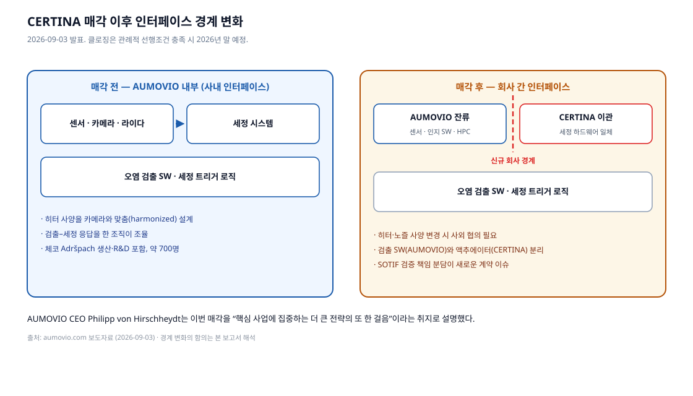
기술적으로 가장 중요한 변화는 조직 경계의 이동이다. 지금까지 AUMOVIO는 카메라·라이다 센서 본체, 그 센서를 닦는 세정 하드웨어, 언제 닦을지 판단하는 인지·검출 소프트웨어를 한 회사 안에 갖고 있었다. 그래서 “카메라와 조화된 히터” 같은 부품 간 사양 정합이 사내 조율로 가능했다. 매각 후 같은 최적화를 하려면 회사 간 계약과 사양 협의가 필요하다. (이하 본 보고서 해석)
- SOTIF 검증 책임 분담. “세정 후에도 오염이 남는다”는 시나리오의 안전 논증은 누가 소유하는가 — 센서 공급자, 세정 공급자, OEM?
- 응답 시간 사양. 세정 지령부터 시야 회복까지의 지연은 두 회사의 부품이 함께 만드는 값이다. 계약상 어느 쪽이 보증하는가.
- 변경 관리. 카메라 모듈이 개선되면 노즐 히터 사양도 따라 바뀐다. 사내 설계 변경이던 것이 사외 협의 항목이 된다.
07Takeaways
시사점 — 차량 HPC·인지 아키텍처 설계자 체크리스트
아래는 본 보고서 해석이며 AUMOVIO 공식 권고가 아니다.
- 오염 검출을 인지 스택의 1급 시민으로. 오염 마스크는 검출·분할 결과와 함께 다운스트림으로 전달되어야 하고, 가려진 영역의 검출 결과는 신뢰도를 낮춰야 한다.
- 세정을 액추에이터로 모델링하라. 부가 기능이 아니라 인지 가용성을 회복시키는 액추에이터다. 지령–효과 지연, 성공률, 자원 소모를 갖는 제어 대상이다.
- 세정액을 자원 예산에 포함하라. 배터리 SoC처럼 세정액 잔량도 ODD 유지 조건이다. L4에서는 “세정액 부족”이 운행 종료 사유가 될 수 있다.
- 오염 유형별 최소 수단 정책. 먼지에 액체를 쓰면 운행 시간을 낭비한다.
- 열 설계와 세정 설계를 함께. 히터 사양은 센서 모듈 열 사양에 종속된다. 두 사양이 다른 조직·회사에 있으면 인터페이스를 문서로 못 박아야 한다.
- 공급망 재편을 사양서에 반영하라. 2026년 말 이후 이 부품군의 공급자는 CERTINA다. 진행 중인 프로그램이라면 변경 관리·품질 보증 주체를 지금 확인해 두는 편이 안전하다.
- 기구식 세정의 공간·신뢰성 비용을 조기에 평가하라. ARaymond·Bosch·Valeo가 모두 이 방향에 투자하지만, 가동부는 패키징과 고장 모드를 늘린다.
08Sources
출처
공식 발표 · 1차 자료
| 구분 | 자료 |
|---|---|
| AUMOVIO | Optical Sensors & Windshield Cleaning Systems 제품 페이지 (2026-09-07 수집) |
| AUMOVIO | 세정 사업 CERTINA 매각 보도자료 (2026-09-03) |
| AUMOVIO | Facts and Figures |
| Continental | Sensor Array 보도자료 (2022-09-15, IAA TRANSPORTATION) |
| Continental | 스핀오프 IR 페이지 |
| K&L Gates | AUMOVIO 매각 법률자문 발표 |
| Valeo | Sensor and camera cleaning system |
| Ficosa | Sensor and camera cleaning |
| ARaymond | Cleaning systems |
| Kautex | Sensor Cleaning for Highly Automated Driverless Vehicles |
특허
| 번호 | 제목 | 출원인 / 보유자 |
|---|---|---|
| US20130146577A1 | Vehicle mounted optical and sensor cleaning system (2012-12-06 출원) | Continental Automotive Systems |
| US20180015907A1 | Sensor cleaning system for vehicles (2016-07-18 출원) | Uber Technologies → Aurora Operations |
| WO2024199756A1 | Lidar cleaning system (우선일 2023-03-27) | Robert Bosch GmbH |
학술 연구 · 표준
| 자료 | 내용 |
|---|---|
| SoilingNet (arXiv:1905.01492) | 서라운드뷰 카메라 오염 검출, 불투명/투명 오염 분류 |
| Let’s Get Dirty (arXiv:1912.02249) | GAN 기반 오염 데이터 증강 → 검출 정확도 18% 향상 |
| Lost in Fog (arXiv:2605.21446) | 센서 교란이 주행 VLA 추론에 미치는 영향 (정량 수치 미확인) |
| ISO 21448 (SOTIF) | 의도된 기능의 안전 — 기능적 불충분·트리거링 컨디션 |
서드파티 보도 · 시장조사 (신뢰도 구분 필요)
| 자료 | 성격 |
|---|---|
| just-auto — AUMOVIO/CERTINA 매각 보도 | 업계 매체 |
| Bloomberg — AUMOVIO 상장 첫날 시가총액 | 통신사 |
| Businesswire — Kautex 수상 | 기업 배포 보도자료 |
| Businesswire — Actasys $5M 투자 유치 (2020-12-02) | 기업 배포 보도자료 |
| Fierce Electronics — ActaJet 기술 소개 | 기술 매체 |
| openpr — 시장 규모 (Persistence MR 인용) | 시장조사 추정, 방법론 비공개 — 신뢰도 낮음 |
그림 출처
| 그림 | 출처 |
|---|---|
| 1 · 2 · 3 · 5 · 7 · 9 · 10 (SVG 다이어그램) | 본 보고서 자작. 각 캡션에 근거 자료와 해석 범위 명시 |
| 4 · 6 · 8 (제품 사진) | © AUMOVIO SE. aumovio.com에서 2026-09-07 수집 |
원문 보관: reference/aumovio-product-page-extract.txt — AUMOVIO 제품 페이지 본문 전체 추출본(2026-09-07)
Appendix
부록. 확인하지 못한 항목 (출처 미확인)
정직한 리서치를 위해, 조사 과정에서 확인에 실패한 항목을 명시한다.
| 항목 | 상태 |
|---|---|
| 세정 1회당 액체 소모량(ml) | AUMOVIO 공개 자료에 없음 |
| 라이다·카메라 노즐의 공기 압력·유량 사양 | 공개되지 않음 (액체 펌프 2.0~4.0 bar만 공개) |
| PTC 히터 소비 전력 | 공개되지 않음 |
| 오염 검출 알고리즘 상세 | “intelligent applications”로만 기술 |
| 세정 사업 매출 규모 및 매각가 | 양측 비공개 |
| 세정 제품의 OEM 수주 실적·차종 | 확인 실패 |
| Valeo everView LiDAR 세정액 소모량 비교 수치 | 2차 인용만 확인, 공식 페이지 접근 실패(HTTP 404) — 본문에서 제외 |
| 업체별 시장 점유율 | 방법론 미공개 추정치만 존재 — 본문에서 제외 |
| “Lost in Fog”(arXiv:2605.21446) 정량 열화 수치 | 원문 표 확인 실패 |